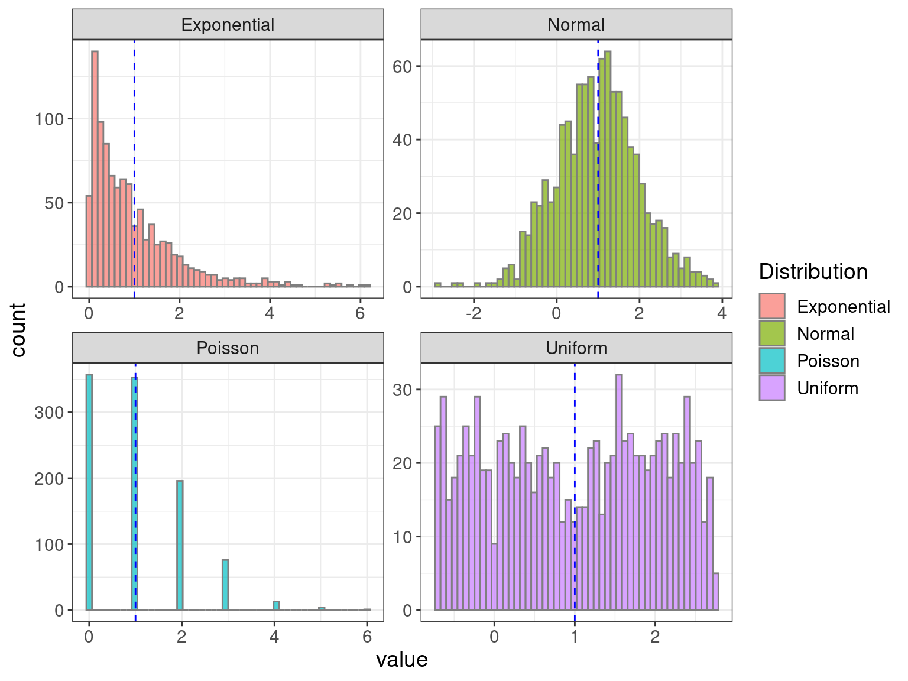
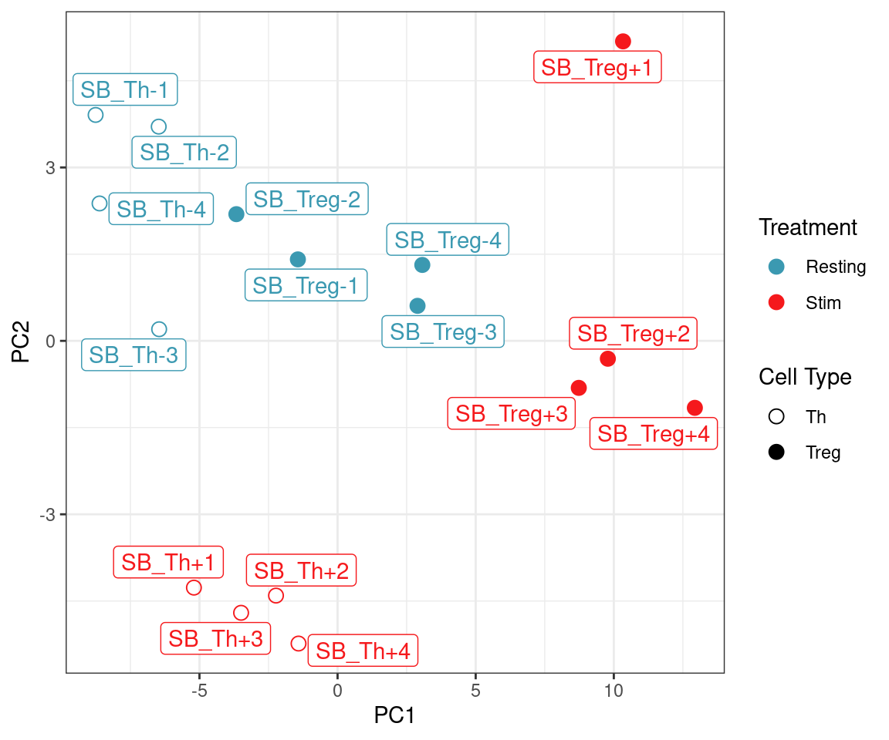

library(tidyverse)Basic Statistics
BODL R Training
Dr Stevie Pederson
Black Ochre Data Labs
Telethon Kids Institute
February 17, 2023
Basic Statistical Techniques
Setup
- Restart R Session
- Remove objects if required
- New R Script
- BasicStatistics.R
Introduction
Rhas it’s origins as a statistical analysis language (i.e.S)- Purpose of this session is NOT to teach statistics
- I am a Bioinformatician NOT statistician
- How do we perform simple analyses in R?
- Up to you to know what you’re doing
- Or talk to your usual statistician
Distributions
Rcomes with nearly every distribution- Standard syntax for accessing each
Distributions
| Distribution | Density | Area Under Curve | Quantile | Random |
|---|---|---|---|---|
| Normal | dnorm() |
pnorm() |
qnorm() |
rnorm() |
| T | dt() |
pt() |
qt() |
rt() |
| Uniform | dunif() |
punif() |
qunif() |
runif() |
| Exponential | dexp() |
pexp() |
qexp() |
rexp() |
| \(\chi^2\) | dchisq() |
pchisq() |
qchisq() |
rchisq() |
| Binomial | dbinom() |
pbinom() |
qbinom() |
rbinom() |
Distributions
- Also Poisson, Beta, \(\Gamma\), Log-Normal, F, Geometric, Cauchy, Hyper-geometric etc…
Distributions
Take a random sample from a few important distributions
These were all sampled from distributions with \(\mu = 1\); \(\sigma = 1\)
Distributions
- Normal
- The most common distribution (i.e. Bell Curve)
- Most statistical theory developed for this type of data
- Uniform
- Can appear anywhere within a range, with equal probability
- Most common example: \(p\)-values under \(H_0\)
- Exponential
- Continuous data
- Common example is the time between events occurring
- Poisson
- Discrete (i.e. count) data
- Number of phone calls per minute
- Number of alignments per kb
Distributions
Why are the sample means & std. deviations not exactly equal to 1?
| Distribution | \(\hat{\mu}\) | \(\hat{\sigma}\) |
|---|---|---|
| Normal | 0.9788 | 0.9777 |
| Uniform | 1.02 | 0.9915 |
| Exponential | 1.033 | 0.9844 |
| Poisson | 0.974 | 0.9686 |
All Densities
All Densities

Basic Tests
Data For This Session
We’ll use the toothData dataset we saw yesterday
- Length of teeth in rats
- Two vitamin C supplementation methods
- Three dose levels
Data For This Session

t-tests
- Data should be normally distributed
- \(t\)-tests always test \(H_0\) Vs \(H_A\)
- (We may not always do meaningful tests today)
t-tests
- The simplest test is on a simple vector
- The below is a bit of a dumb test
- Demonstrates the code (not the statistics)
What is \(H_0\) in the above test?
\[ H_0: \mu = 0\\ H_A: \mu \neq 0 \]
t-tests
\[ H_0: \mu_{1} = \mu_{2} \\ H_A: \mu_{1} \neq \mu_{2} \]
We could use two vectors (i.e. x & y)
Is this a paired test?
t-tests
\[ H_0: \mu_{1} = \mu_{2} \\ H_A: \mu_{1} \neq \mu_{2} \]
Or we could use the R formula method:
len~supp: len (the response) is dependent on supp (the predictor)
Did this give the same results?
Working With Objects of Class htest()
- The results of
t.test()are of classhtest
res
##
## Welch Two Sample t-test
##
## data: len by supp
## t = -1.9153, df = 55.309, p-value = 0.06063
## alternative hypothesis: true difference in means between group VC and group OJ is not equal to 0
## 95 percent confidence interval:
## -7.5710156 0.1710156
## sample estimates:
## mean in group VC mean in group OJ
## 16.96333 20.66333- When we type the object name:
print()is called print()actually looks for a functionprint.htest()- This is known as an
S3method- More on these later
Working With Objects of Class htest()
- We know these objects are just a list
- Can grab any values we want
names(res)
## [1] "statistic" "parameter" "p.value" "conf.int" "estimate"
## [6] "null.value" "stderr" "alternative" "method" "data.name"
res$statistic
## t
## -1.915268
res$parameter
## df
## 55.30943
res$p.value
## [1] 0.06063451
res$conf.int
## [1] -7.5710156 0.1710156
## attr(,"conf.level")
## [1] 0.95- We can place these inline using `
r`
Working With Objects of Class htest()
panderis excellent for formatting the complete results
Working With Objects of Class htest()
tidy()from the packagebroomwill produced atibble()
library(broom)
tidy(res)
## # A tibble: 1 × 10
## estim…¹ estim…² estim…³ stati…⁴ p.value param…⁵ conf.…⁶ conf.…⁷ method alter…⁸
## <dbl> <dbl> <dbl> <dbl> <dbl> <dbl> <dbl> <dbl> <chr> <chr>
## 1 -3.7 17.0 20.7 -1.92 0.0606 55.3 -7.57 0.171 Welch… two.si…
## # … with abbreviated variable names ¹estimate, ²estimate1, ³estimate2,
## # ⁴statistic, ⁵parameter, ⁶conf.low, ⁷conf.high, ⁸alternativeWilcoxon Tests
- We assumed the data was normally distributed: What if it’s not?
- Non-parametric alternative is the Wilcoxon Rank-Sum (aka Mann-Whitney)
\[ H_0: \text{Distribution}_1 = \text{Distribution}_2 \\ H_A: \text{Distribution}_1 \neq \text{Distribution}_2 \]
Wilcoxon Tests
- This assigns ranks to each value based on their value
- Tied values can be problematic
- Test is based on ranks not values
- Still produces an object f class
htest
res <- wilcox.test(len~supp, data = toothData)
class(res)
## [1] "htest"
names(res)
## [1] "statistic" "parameter" "p.value" "null.value" "alternative"
## [6] "method" "data.name"
res
##
## Wilcoxon rank sum test with continuity correction
##
## data: len by supp
## W = 324.5, p-value = 0.06449
## alternative hypothesis: true location shift is not equal to 0\(\chi^2\) Test
- Here we need counts
- Often a \(2 \times 2\) table
- Commonly used in Observed Vs Expected
\[ H_0: \text{No dependence between groups and outcome}\\ H_A: \text{Dependence between groups and outcome} \]
\(\chi^2\) Test
res <- chisq.test(pass)
names(res)
## [1] "statistic" "parameter" "p.value" "method" "data.name" "observed"
## [7] "expected" "residuals" "stdres"
class(res)
## [1] "htest"
res
##
## Pearson's Chi-squared test with Yates' continuity correction
##
## data: pass
## X-squared = 9.8359, df = 1, p-value = 0.001711Can anyone remember when we shouldn’t use a \(\chi^2\) test?
Fisher’s Exact Test
- \(\chi^2\) tests became popular in the days of the printed tables
- We now have computers
- Fisher’s Exact Test is preferable in the cases of low cell counts
- Uses the hypergeometric distribution
- Same \(H_0\) as the \(\chi^2\) test
fTest <- fisher.test(pass)
names(fTest)
## [1] "p.value" "conf.int" "estimate" "null.value" "alternative"
## [6] "method" "data.name"
class(fTest)
## [1] "htest"
fTest
##
## Fisher's Exact Test for Count Data
##
## data: pass
## p-value = 0.0008527
## alternative hypothesis: true odds ratio is not equal to 1
## 95 percent confidence interval:
## 1.960512 32.639000
## sample estimates:
## odds ratio
## 7.464139Basic Hypothesis Testing
- \(t\)-tests
- Wilcoxon Rank-Sum tests (aka Mann-Whitney)
- \(\chi^2\) tests
- Fisher’s Exact Test
Basic Hypothesis Testing
All tests gave similar looking output.
- Objects of class
htest- Print & markdown formatting methods exist for this class
tibblecoercion also exists
- These are list objects
- We can simply grab any values we need
Regression
Linear Regression
Recap: We are trying to estimate a line
\[ y = ax + b \]
Or
\[ y = \beta_0 + \beta_1 x \]
Linear Regression
Linear Regression always uses the R formula syntax
y ~ xmeansydepends onx- i.e. \(y = \beta_0 + \beta_1x\)
- The Intercept term is assumed unless explicitly removed (
~ 0 + ...)
- We use the function
lm()
Linear Regression
- Produces an
listobject of classlm print.lmmethods exist- Not quite as helpful as for
htest
- Not quite as helpful as for
Linear Regression
panderalso works nicely
Linear Regression
pander()actually callssummary()before printing- This produces the main output table we look for
summary(lm_tooth)
##
## Call:
## lm(formula = len ~ supp, data = toothData)
##
## Residuals:
## Min 1Q Median 3Q Max
## -12.7633 -5.7633 0.4367 5.5867 16.9367
##
## Coefficients:
## Estimate Std. Error t value Pr(>|t|)
## (Intercept) 16.963 1.366 12.418 <2e-16 ***
## suppOJ 3.700 1.932 1.915 0.0604 .
## ---
## Signif. codes: 0 '***' 0.001 '**' 0.01 '*' 0.05 '.' 0.1 ' ' 1
##
## Residual standard error: 7.482 on 58 degrees of freedom
## Multiple R-squared: 0.05948, Adjusted R-squared: 0.04327
## F-statistic: 3.668 on 1 and 58 DF, p-value: 0.06039Linear Regression
- We can also run a simple ANOVA
Linear Regression
- Both
anova()andsummary()also create objectsanova()creates adata.framesummary()creates alist
Linear Regression
broom::tidy()also works on all objects- Calls
summary()on the basiclmobject
- Calls
Regression Diagnostics
- Passing an object of class
lmtoplot()produces 4 diagnostic plots- The are produced in series
- Can be produced in one call by setting the plot device to be two rows and two columns
par()is used to set global plotting parametersmfrowis for Multi-Frame Row-wise plots
Regression Diagnostics
- Can be produced manually using
ggplot- Only needed if specifically required
tibble(
fitted = fitted(lm_tooth),
resid = resid(lm_tooth),
standard = rstandard(lm_tooth)
) %>%
ggplot(aes(sample = standard)) +
stat_qq(shape = 21) +
stat_qq_line(linetype = 3) +
ggtitle("Normal Q-Q") +
labs(
x = "Theoretical Quantiles",
y = "Standardized Residuals"
) +
scale_y_continuous(
expand = expansion(c(0, 0))
) +
theme(plot.title = element_text(hjust = 0.5))Interaction Terms
- The previous model assumed that tooth length increased by 3.7 across all dose levels
- Do we believe that?
Interaction Terms
- Adding
doseto the model would define a new baseline (Intercept) for each dose levellm ~ dose + supp- The difference is still assumed constant
| Estimate | Std. Error | t value | Pr(>|t|) | |
|---|---|---|---|---|
| (Intercept) | 8.755 | 0.9883 | 8.859 | 3.052e-12 |
| doseMed | 9.13 | 1.21 | 7.543 | 4.383e-10 |
| doseHigh | 15.49 | 1.21 | 12.8 | 2.852e-18 |
| suppOJ | 3.7 | 0.9883 | 3.744 | 0.0004293 |
Interaction Terms
- Including an interaction term allows for a different effect at each level
Quitting from lines 654-657 (2.3_BasicStatistics.rmarkdown) Error in pander(lm_interacton) : object ‘lm_interacton’ not found Calls: .main … withVisible -> eval_with_user_handlers -> eval -> eval -> pander
Interaction Terms
- The complete manual specification was
len ~ dose + supp + dose:supp - A shorthand is
len ~ dose * supp - When dealing with multiple terms
len ~ (dose + supp)^2- The exponent sets the level of interactions
- Interaction terms usually require careful thought…
- 3-level interactions get really confusing
Model Selection
Which model should we choose?
- Running an ANOVA on multiple related models compares the reduction in the residual Sum of Squares
- The p-value tests H0: No improvement in model fit when removing the next term
- Clearly the interaction term improves the fit and should remain
- This makes intuitive sense
Other Types of Regression
lmfits conventional linear regression, i.e. Normal Residuals- Also assumes all effects are fixed effects
- Mixed effects models are best fit using
lme4::lmer()- Can be clunky syntax, random effects specified using
(1|variable) - No \(p\)-values provided \(\implies\)
lmerTest
- Can be clunky syntax, random effects specified using
- Poisson and Logistic Regression can be fit using
glm()- Logistic:
glm(..., family = binomial()) - Poisson:
glm(..., family = poisson())
- Logistic:
- Robust Regression using
MASS::rlm()
Other Statistical Tools
Mutiple Testing in R
The function p.adjust() takes the argument method = ...
- We can select from
c("fdr", "BH", "BY", "holm", "bonferroni")
Also the package multcomp is excellent
PCA
- Here we have 50 genes:
- Two T cell types (Th and Treg)
- Two treatments: Stimulated (+) & Resting (-)
PCAneeds a matrix, so I’ll transform as I load
PCA
- Our variable of interest here is the cell-types (columns)
- We need to set that as the row variable:
- Transpose the data using
t() - Run
PCAusingprcomp()
PCA
- I don’t find the standard functions very friendly
broom::tidy()is far more convenient
- We still might like sample-level information
PCA
- Now we can plot more easily
library(ggrepel)
pca_df %>%
dplyr::filter(PC %in% 1:2) %>%
pivot_wider(
names_from = "PC",
values_from = "value",
names_prefix = "PC"
) %>%
ggplot(aes(PC1, PC2, colour = treat)) +
geom_point(
aes(shape = cell_type), size = 3
) +
geom_label_repel(
aes(label = row), show.legend = FALSE
) +
scale_colour_manual(
values = hcl.colors(2, "Zissou1")
) +
scale_shape_manual(values = c(21, 19)) +
labs(shape = "Cell Type", colour = "Treatment")
PCA
- Alternatively
library(ggrepel)
pca_df %>%
dplyr::filter(PC %in% 1:2) %>%
pivot_wider(
names_from = "PC",
values_from = "value",
names_prefix = "PC"
) %>%
ggplot(aes(PC1, PC2, colour = group)) +
geom_point(
aes(shape = group), size = 3
) +
scale_colour_manual(
values = rep(hcl.colors(2, "Zissou1"), 2)
) +
scale_shape_manual(values = c(21, 21, 19, 19)) +
labs(shape = "Group", colour = "Group") +
theme(
legend.position = c(0.99, 0.01),
legend.justification = c(1, 0)
)Multiple Panels
C <- pca_df %>%
dplyr::filter(PC %in% 1:2) %>%
pivot_wider(
names_from = "PC",
values_from = "value",
names_prefix = "PC"
) %>%
ggplot(aes(PC1, PC2, colour = group)) +
geom_point(
aes(shape = group), size = 3
) +
scale_colour_manual(
values = rep(hcl.colors(2, "Zissou1"), 2)
) +
scale_shape_manual(values = c(21, 21, 19, 19)) +
labs(shape = "Group", colour = "Group") A <- pca_df %>%
dplyr::filter(PC %in% c(1, 3)) %>%
pivot_wider(
names_from = "PC",
values_from = "value",
names_prefix = "PC"
) %>%
ggplot(aes(PC1, PC3, colour = group)) +
geom_point(
aes(shape = group), size = 3
) +
scale_colour_manual(
values = rep(hcl.colors(2, "Zissou1"), 2)
) +
scale_shape_manual(values = c(21, 21, 19, 19)) +
labs(shape = "Group", colour = "Group") B <- pca_df %>%
dplyr::filter(PC %in% c(2, 3)) %>%
pivot_wider(
names_from = "PC",
values_from = "value",
names_prefix = "PC"
) %>%
ggplot(aes(PC2, PC3, colour = group)) +
geom_point(
aes(shape = group), size = 3
) +
scale_colour_manual(
values = rep(hcl.colors(2, "Zissou1"), 2)
) +
scale_shape_manual(values = c(21, 21, 19, 19)) +
labs(shape = "Group", colour = "Group") library(scales)
D <- pcaGenes %>%
summary() %>%
.[["importance"]] %>%
as_tibble(rownames = "Type") %>%
pivot_longer(cols = starts_with("PC"), names_to = "PC") %>%
dplyr::filter(str_detect(Type, "^Proportion")) %>%
mutate(PC = fct_inorder(PC) %>% fct_relabel(str_remove, "PC")) %>%
ggplot(aes(PC, value)) +
geom_col(fill = "grey", colour = "black") +
scale_y_continuous(expand = expansion(c(0, 0.05)), labels = percent) +
labs(x = "Principal Component", y = "% Variance")Combined PCA Plot
library(patchwork)
(A + B) / (C + D) +
plot_layout(guides = "collect") +
plot_annotation(tag_levels = "A")